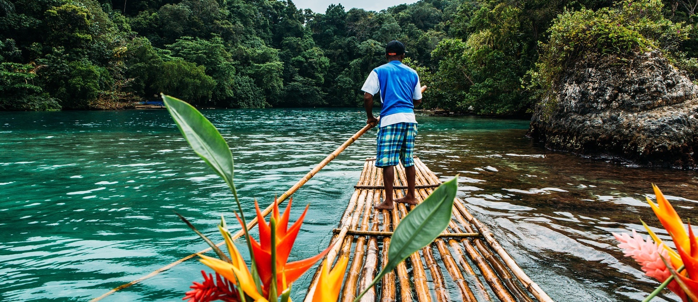

Encompassing 180 meters of gently terraced waterfalls, Dunn's River Falls is one of Jamaica's most famous natural attractions. The falls tumble over rocks and limestone ledges into the sea.
In 2015, the spectacular Blue and John Crow Mountains National Park was inscribed on the list of UNESCO World Heritage Sites for its rich natural and cultural heritage. Once a refuge for former slaves and the indigenous Taino, who fled here to escape slavery, this unspoiled preserve offers breathtaking scenery. Within its borders, you can explore jungle-clad mountains; waterfalls; lush rainforests; coffee plantations; and exotic plants and animals, including 800 species of endemic plants, more than 200 species of birds, and the world's second largest butterfly.
High in the rainforest-cloaked mountains outside Ocho Rios, the Blue Hole (also called Island Gully Falls or the Irie Blue Hole) is a series of picturesque waterholes fed by gushing cascades. Guides lead you around the area where you can explore the falls and jump off cliffs into the refreshing pools below.

Expert guides pole bamboo rafts through an impressive stretch of tropical rainforest along the Rio Grande River during a two-and-a-half-hour tour. Rafting here dates back to around 1911, when banana farmers in the Rio Grande Valley used to transport their bananas along the river.